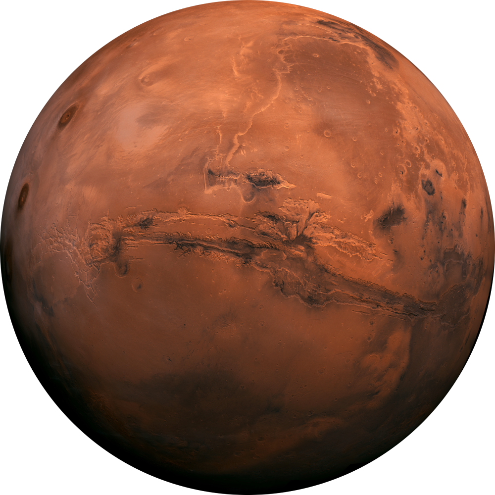

<div class="outer-layer">
  <div class="menu">
    <h2 class="menu-option">HOME</h2>
    <h2 class="menu-option">IMAGES</h2>
    <h2 class="menu-option">NASA</h2>
    <h2 class="menu-option">ROVERS</h2>
  </div>
  <div class="texts-and-button">
    <h2 class="primary-text">EXPLORE MARS</h2>
        <h3 class="secondary-text">IMAGES DIRECTLY FROM THE NASA ROVERS</h3>
    <!--    <h3 class="secondary-text">Images directly from the NASA rovers</h3>-->
    <button class="start-exploring-btn">START EXPLORING</button>
  </div>
</div>
<svg class="svgs" height="200vh" width="100vw">
  <circle  cx="35vw" cy="0vh" r="90vh" fill="rgba(0,0,0,0.15)" />
  <circle  cx="70vw" cy="110vh" r="70vh" fill="rgba(0,0,0,0.15)" />
  <circle class="mars-circles" *ngFor="let circle of marsCircles"
          [ngClass]="generateIsForWardMovingBool()? 'forwards' : 'backwards'"
          [ngStyle]="{'animation-duration':generateRandomSpeed()+'s'}"
          [attr.stroke-dasharray]="circle.dashArray"
          [attr.cx]="marsImageCenter"
          cy="55vh"
          [attr.r]="circle.radius"
          stroke="rgba(255,255,255,0.1)"
          [attr.stroke-width]="circle.strokeWidth"
          fill="none"/>
</svg>

